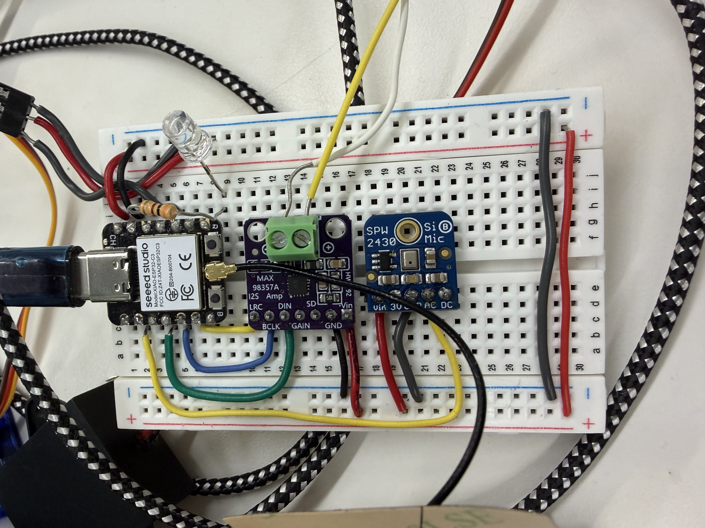
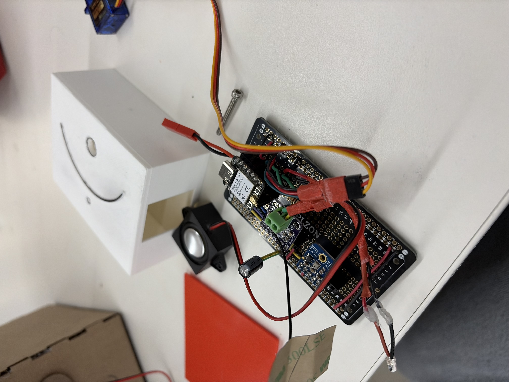
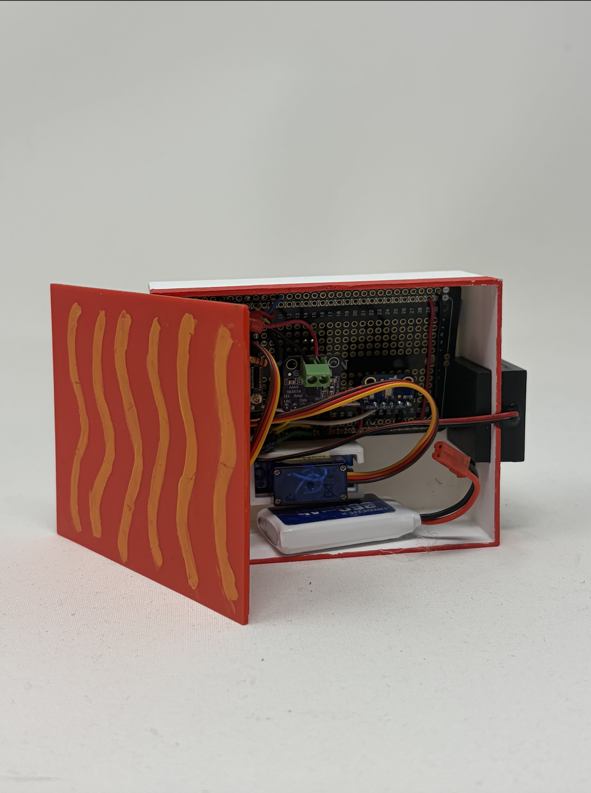

While my project isn't necessarily innovative, I wanted to make something close to one of my other interests, music. As a flute player, I spend a lot of time next to a tuner, making sure I can play each pitch correctly. Its painstaking and honestly the most boring excercise I can do. So, I wanted to make a tuner that would be funny or make me enjoy tuning a little bit more
Below is my breadboard for my final project. It includes all of the hardware listed above, except for the I2S Microphone, capacitor, and LED strip. This iteration, which was very similar to my MVP used an analog mic. I would learn later that the analog mic was not good at picking up sound from inside the 3D printed shell. After that, I decided to change to an I2S microphone for better detection.

I originally had TTS running over Wifi, which I also learned was not very reliable.
So, when Claudia offered that I could use her extra ESP32C3, because it had much more storage, I decided to store the speech as MP3 files on the Xiao itself, this way it coul run without Wifi and run more reliably. This was the point where I ended up replacing the analog microphone with an I2S microphone and my ESP32C3 with the S3.

The way my code works is tht it mounts the LittleFS file system so tht files on my Xiao can be played later, initializes the LED strip and the mic, and finally playing a startup MP3 file. Then, the microphone continuously reads raw audio samples from the microphone using one of the 2 I2S channels. Then, it calcultes the volume to see if its loud enoug to process. The dominant frequency is then found through FFT, which is then printed to the serial monitor. That frequency is compared aginst 440 Hz, the target frequency using a range of tolerable frequencies. Then, it uses conscutive match counters and requires 8 consecutive decisions to prevent the tuner from jumping around. Then, the sevo is moved to the corresponding side,the LED is changed to either green or red and a fish realted pun stored as an MP3 is played. Once the MP3 is finished playing, it clears the LED, moves the servo back. to 90 and waits for another pitch to be played.
Here is the link to my code.
